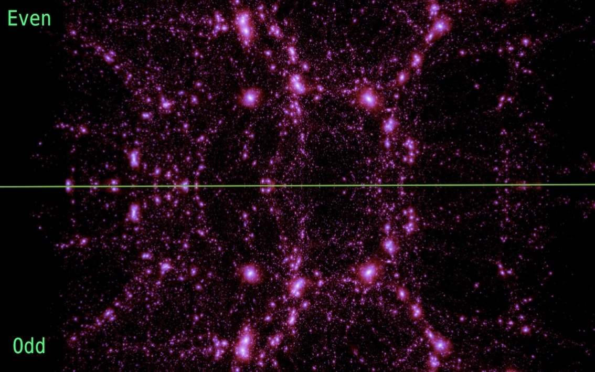

Recent Highlights
Click on the images below to read about some of my recent highlights. You can view my complete publication history here.
here . These videos were made by fantastic collaborator Francisco Villaescusa-Navarro " alt="" />
Examining mirror universes
 to the expected distribution of dark matter and a set of state-of-the-art cosmological simulations (green, orange, pink). Our <a style='color:DodgerBlue;'' href='https://arxiv.org/abs/2401.13033'> paper</a> further explores this new probe of cosmic gas.")
Tracing out cosmic gas
 photons. This scattering distorts the spectrum of the CMB photons in a manner that encodes the temperature of the electrons. Through precision measurements of the spectrum at the location of galaxy clusters, we can therefore measure the temperature of the electrons. This plot compares temperature measurements for a stack ~4500 ACT clusters and ~8000 optical clusters to predictions from X-ray temperature models (green and yellow). See <a style='color:DodgerBlue;'' href='https://arxiv.org/abs/2410.19046'> here </a> for more details.")
Measuring cluster temperatures

Mapping sky signals